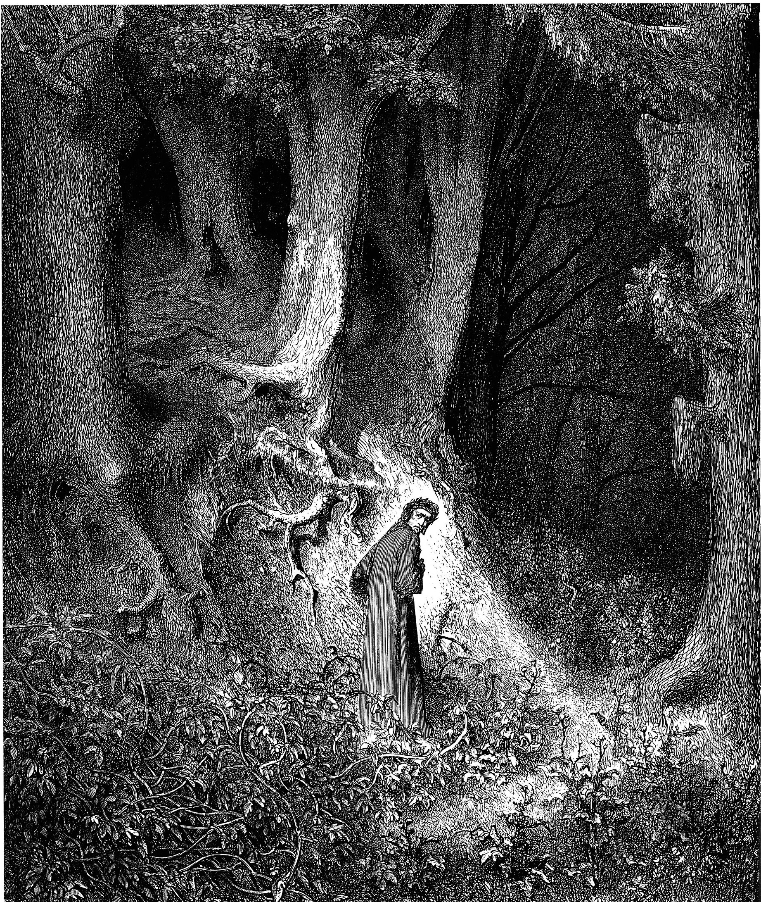
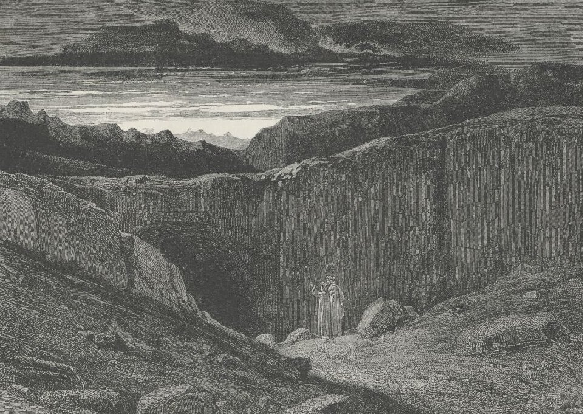
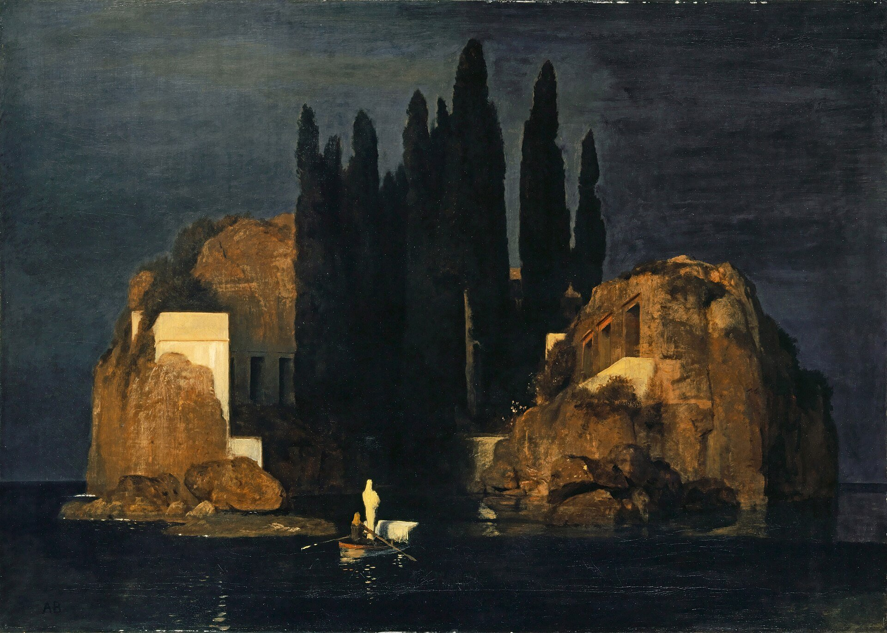

← 目次“Instead of going up, I turned and descended to the left. My idea was to let that chain-gang get out of sight before I climbed the hill. You know I am not particularly tender; I’ve had to strike and to fend off. I’ve had to resist and to attack sometimes—that’s only one way of resisting—without counting the exact cost, according to the demands of such sort of life as I had blundered into. I’ve seen the devil of violence, and the devil of greed, and the devil of hot desire; but, by all the stars! these were strong, lusty, red-eyed devils, that swayed and drove men—men, I tell you.
I’ve seen the devil of violence, and the devil of greed, and the devil of hot desire.
But as I stood on this hillside, I foresaw that in the blinding sunshine of that land I would become acquainted with a flabby, pretending, weak-eyed devil of a rapacious and pitiless folly. How insidious he could be, too, I was only to find out several months later and a thousand miles farther. For a moment I stood appalled, as though by a warning. Finally I descended the hill, obliquely, towards the trees I had seen.
“I avoided a vast artificial hole somebody had been digging on the slope, the purpose of which I found it impossible to divine. It wasn’t a quarry or a sandpit, anyhow. It was just a hole. It might have been connected with the philanthropic desire of giving the criminals something to do. I don’t know. Then I nearly fell into a very narrow ravine, almost no more than a scar in the hillside. I discovered that a lot of imported drainage-pipes for the settlement had been tumbled in there. There wasn’t one that was not broken. It was a wanton smash-up. At last I got under the trees.
It wasn’t a quarry or a sandpit, anyhow. It was just a hole.

Gustave Doré, Inferno, Canto III（All hope abandon, ye who enter here）, 1861／Public domain／Commons
My purpose was to stroll into the shade for a moment; but no sooner within than it seemed to me I had stepped into the gloomy circle of some Inferno. The rapids were near, and an uninterrupted, uniform, headlong, rushing noise filled the mournful stillness of the grove, where not a breath stirred, not a leaf moved, with a mysterious sound—as though the tearing pace of the launched earth had suddenly become audible.
It seemed to me I had stepped into the gloomy circle of some Inferno.
“Black shapes crouched, lay, sat between the trees leaning against the trunks, clinging to the earth, half coming out, half effaced within the dim light, in all the attitudes of pain, abandonment, and despair. Another mine on the cliff went off, followed by a slight shudder of the soil under my feet. The work was going on. The work! And this was the place where some of the helpers had withdrawn to die.
“They were dying slowly—it was very clear. They were not enemies, they were not criminals, they were nothing earthly now—nothing but black shadows of disease and starvation, lying confusedly in the greenish gloom. Brought from all the recesses of the coast in all the legality of time contracts, lost in uncongenial surroundings, fed on unfamiliar food, they sickened, became inefficient, and were then allowed to crawl away and rest. These moribund shapes were free as air—and nearly as thin.

Arnold Böcklin, Isle of the Dead (first version), 1880／Public domain／Commons
I began to distinguish the gleam of the eyes under the trees. Then, glancing down, I saw a face near my hand. The black bones reclined at full length with one shoulder against the tree, and slowly the eyelids rose and the sunken eyes looked up at me, enormous and vacant, a kind of blind, white flicker in the depths of the orbs, which died out slowly. The man seemed young—almost a boy—but you know with them it’s hard to tell. I found nothing else to do but to offer him one of my good Swede’s ship’s biscuits I had in my pocket. The fingers closed slowly on it and held—there was no other movement and no other glance. He had tied a bit of white worsted round his neck—Why? Where did he get it? Was it a badge—an ornament—a charm—a propitiatory act? Was there any idea at all connected with it? It looked startling round his black neck, this bit of white thread from beyond the seas.
“Near the same tree two more bundles of acute angles sat with their legs drawn up. One, with his chin propped on his knees, stared at nothing, in an intolerable and appalling manner: his brother phantom rested its forehead, as if overcome with a great weariness; and all about others were scattered in every pose of contorted collapse, as in some picture of a massacre or a pestilence. While I stood horror-struck, one of these creatures rose to his hands and knees, and went off on all-fours towards the river to drink. He lapped out of his hand, then sat up in the sunlight, crossing his shins in front of him, and after a time let his woolly head fall on his breastbone.